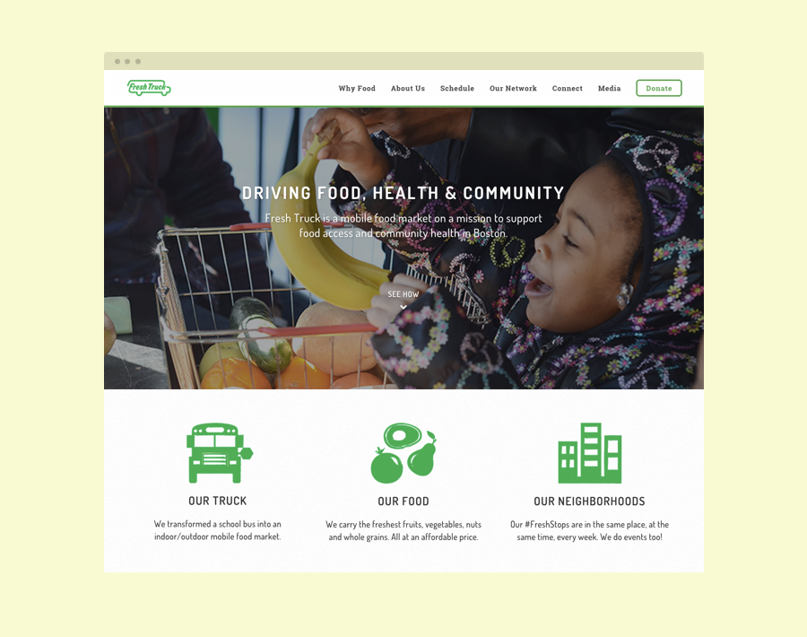

Fresh Truck
Visit Site- Project lead
- Web design
- Web development
- Branding
Pickled selfies gentrify church-key, mumblecore Intelligentsia deep v. Butcher Blue Bottle health goth farm-to-table lomo bitters. Seitan salvia farm-to-table locavore, 8-bit banjo fixie PBR&B. Trust fund American Apparel cornhole hoodie Schlitz. Fashion axe Intelligentsia irony mlkshk keytar master cleanse Godard, twee kale chips. Skateboard fap McSweeney's, hella Banksy High Life farm-to-table Blue Bottle keytar. Keffiyeh Helvetica wayfarers vinyl, post-ironic Pinterest irony heirloom.
